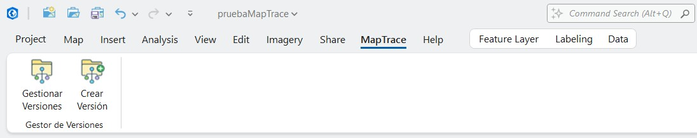

Crear Versión
Descripción
El botón Crear Versión se encuentra en la pestaña MapTrace de la cinta de ArcGIS Pro, dentro del grupo Gestionar Versiones. Permite capturar una instantánea de la capa seleccionada en la tabla de contenidos (TOC) sin necesidad de abrir el panel Gestor de Versiones, reduciendo el número de pasos cuando el único objetivo es guardar rápidamente el estado actual de los datos.
El resultado es idéntico al de usar el botón Crear Versión dentro del panel: se genera una copia
completa del dataset en la geodatabase de instantáneas (Snapshots_*.gdb), se registran los
metadatos en la tabla _MapTrace_Metadata y el nuevo ítem aparece en el historial del panel si
este está abierto.

La pestaña MapTrace en la cinta de ArcGIS Pro. El botón Crear Versión aparece en el grupo Gestionar Versiones.
Cuándo está disponible
El botón se habilita automáticamente cuando se cumplen todas las siguientes condiciones, y se deshabilita en caso contrario:
| Condición | Detalle |
|---|---|
| Capa seleccionada en el TOC | Debe haber exactamente una capa resaltada (seleccionada) en la tabla de contenidos del mapa activo. |
| Tipo de capa compatible | La capa seleccionada debe ser un FeatureLayer o un RasterLayer. |
| Origen en FileGDB | La fuente de datos de la capa debe ser una geodatabase de archivos (FileGDB), local o en ruta de red. |
| Dataset accesible | La GDB debe existir en disco y el dataset (FeatureClass o raster) debe estar disponible. Capas con el icono ⚠ (fuente rota) no están disponibles. |
| No es una capa de vista temporal | Las capas de vista creadas por el botón Ver Versión (prefijo [VISTA]) quedan excluidas. |
El botón se actualiza automáticamente cada vez que cambia la selección en el TOC o cuando ArcGIS Pro detecta un cambio en el estado de las capas (por ejemplo, al eliminar un dataset desde el panel Catalog). No es necesario hacer ninguna acción adicional para refrescar su estado.
Cómo usarlo
- En la tabla de contenidos del mapa activo, haga clic sobre la capa de la que desea guardar una instantánea para seleccionarla (debe quedar resaltada en azul).
- Diríjase a la pestaña MapTrace en la cinta de ArcGIS Pro y haga clic en el botón Crear Versión.
- En el diálogo que aparece, escriba una observación descriptiva del estado actual de los datos (por ejemplo: "Antes de corrección de geometrías sector norte"). La observación puede dejarse en blanco, aunque se recomienda documentar cada versión.
- Haga clic en Aceptar. La operación se ejecuta en segundo plano mediante geoprocesamiento. Si el panel Gestor de Versiones está abierto, la nueva versión aparecerá automáticamente en el historial al terminar.
Cree una versión antes de iniciar cualquier sesión de edición significativa. De este modo siempre dispondrá de un punto de retorno limpio al que regresar si los cambios no resultan satisfactorios.
Si la capa seleccionada tiene una sesión de edición activa con cambios no guardados, guarde los cambios primero (Guardar ediciones en la pestaña Editar) antes de crear la versión. De lo contrario, la instantánea podría no incluir los cambios pendientes.
Comparación con el panel Gestor de Versiones
Ambas formas de crear una versión son equivalentes en resultado. La elección depende del contexto de trabajo:
Botón Crear Versión (cinta)
- Acceso directo desde la cinta, sin abrir el panel.
- Ideal cuando solo se necesita guardar el estado actual rápidamente.
- La capa se determina por la selección activa en el TOC.
- No requiere tener el panel visible.
Botón Crear Versión (panel)
- Requiere tener el panel Gestor de Versiones abierto.
- Permite seleccionar cualquier capa del ComboBox, no solo la activa en el TOC.
- Permite crear versiones de capas huérfanas que se encuentren el la GDB .
- Muestra el historial completo al terminar.
El número de versión asignado es siempre el siguiente disponible en la secuencia, independientemente de si la versión se creó desde la cinta o desde el panel. Ambas rutas comparten el mismo contador.
Limitaciones
- Una sola capa a la vez: el botón opera sobre la capa seleccionada en el TOC en el momento del clic. No es posible crear versiones de múltiples capas simultáneamente con este botón.
- Requiere selección en el TOC: si no hay ninguna capa compatible seleccionada, el botón permanece deshabilitado. En ese caso, utilice el panel Gestor de Versiones y seleccione la capa desde el ComboBox.
- No admite capas huérfanas: solo opera sobre capas activas en la tabla de contenidos. Para crear versiones desde el historial de capas que ya no están en el proyecto, use el panel.
- Sin función de deshacer: una vez confirmada la creación de la versión, no puede deshacerse mediante Ctrl+Z. La versión puede eliminarse desde el panel si fue creada por error.
Para operaciones de visualización, restauración o eliminación de versiones, utilice el panel Gestor de Versiones.